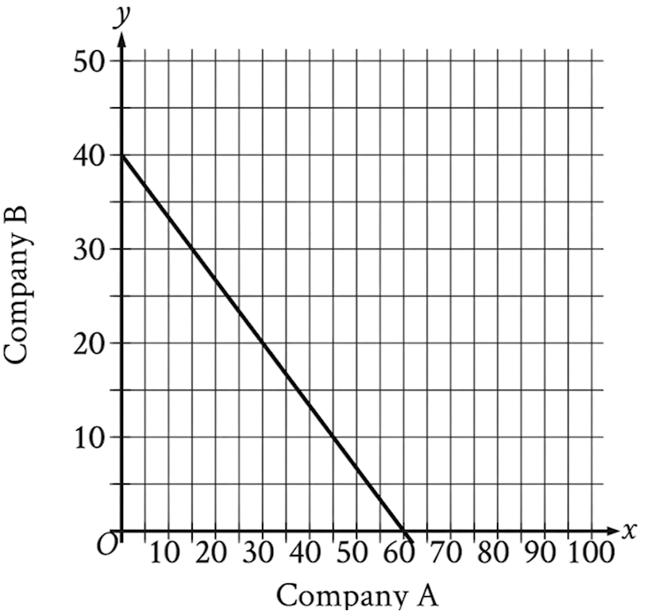
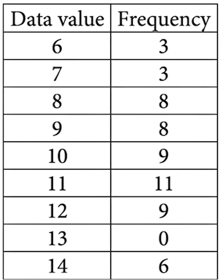
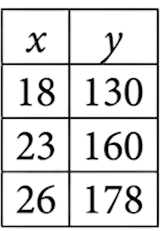
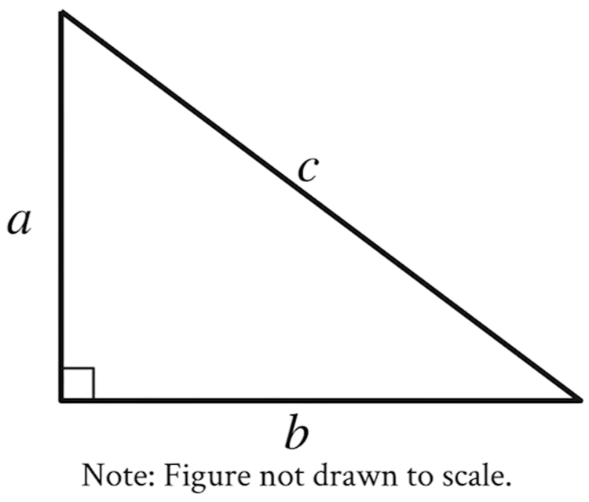

60:00
| What is the result of \( 0.84 + 2.2 + 56.007 \) ? | ما ناتج \( 0.84 + 2.2 + 56.007 \) ؟ |
| A | \( 59.111 \) | A |
| B | \( 58.047 \) | B |
| C | \( 59.047 \) | C |
| D | \( 58.807 \) | D |
| Find the average of the following five numbers : \( 96,\, 82,\, 90,\, 82,\, 85 \) | احسب متوسط الأعداد التالية : \( 96,\, 82,\, 90,\, 82,\, 85 \) |
| A | \( 85 \) | A |
| B | \( 82 \) | B |
| C | \( 87 \) | C |
| D | \( 90 \) | D |
| Solve the equation \( \log_{2}(5x - 1) = 2 \) for the set of real numbers. | ما حل المعادلة \( \log_{2}(5x - 1) = 2 \) ضمن مجموعة الأعداد الحقيقية ؟ |
| A | \( x = 1 \) | A |
| B | \( x = 2 \) | B |
| C | \( x = 4 \) | C |
| D | \( x = 3 \) | D |
| \(7 \dfrac{1}{2} \div 5 \dfrac{5}{9} = ?\) | ما ناتج العملية التالية: \( 7 \dfrac{1}{2} \div 5 \dfrac{5}{9} \) ؟ |
| A | \( \dfrac{100}{135} \) | A |
| B | \( 1 \dfrac{7}{20} \) | B |
| C | \( \dfrac{20}{27} \) | C |
| D | \( 41 \dfrac{2}{3} \) | D |
| A car travels \(438.4\) miles on a full tank of fuel. How far (in miles) does the car travel with one gallon of fuel if the tank capacity is \(16\) gallons? | تقطع سيارة مسافة \(438.4\) ميلاً عندما يكون خزان الوقود ممتلئًا تمامًا. ما المسافة (بالميل) التي تقطعها السيارة بمقدار جالون واحد من الوقود إذا كانت سعة الخزان \(16\) جالونًا؟ |
| A | \(701.44\) | A |
| B | \(27.4\) | B |
| C | \(74.2\) | C |
| D | \(7014.4\) | D |
| Convert \( 55^\circ C \) from Celsius to Fahrenheit using the formula \( F = \frac{9}{5}(C + 32) \) | حوِّل \( 55^\circ C \) من مقياس سيلزيوس إلى فهرنهايت باستخدام العلاقة \( F = \frac{9}{5}(C + 32) \) |
| A | \( 131^\circ F \) | A |
| B | \( 387^\circ F \) | B |
| C | \( 105.4^\circ F \) | C |
| D | \(156.6^\circ F \) | D |
| Find \(a\) in the triangle below. (Note: Figure is not drawn to scale.) |
ما قيمة \(a\) في المثلث الموضح أدناه؟ (ملاحظة: الشكل غير مطابق لمقياس الرسم) |

| A | \(12\) | A |
| B | \(8\) | B |
| C | \(16\) | C |
| D | \(14\) | D |
| What is the volume of a cylinder whose radius is \(5\,cm\) and height is \(4\,cm\) to the nearest integer? (consider that \(\pi=3.14\)) | ما حجم الأسطوانة التي نصف قطرها \(5\,cm\) وارتفاعها \(4\,cm\) لأقرب عدد صحيح باعتبار أن \(\pi=3.14\) |
| A | \(314\, cm³\) | A |
| B | \(63\, cm³\) | B |
| C | \(126\, cm³\) | C |
| D | \(1256\, cm³\) | D |
|
Evaluate \( (b + 2a)^2 + \frac{c^2 - 6b}{d} \) where \(a=2\) \(b=3\) \(c=12\) \(d=6\) |
ما قيمة \( (b + 2a)^2 + \frac{c^2 - 6b}{d} \) عندما \(a=2\) \(b=3\) \(c=12\) \(d=6\) |
| A | \(46\) | A |
| B | \(15\) | B |
| C | \(70\) | C |
| D | \(29 \dfrac{1}{6}\) | D |
| Solve the equation \( \frac{2x - 3}{4} = \frac{5}{6} \). | ما حل المعادلة \( \frac{2x - 3}{4} = \frac{5}{6} \) ؟ |
| A | \(1 \dfrac{3}{6}\) | A |
| B | \(\dfrac{1}{6}\) | B |
| C | \(18\) | C |
| D | \(3 \dfrac{1}{2}\) | D |
| Find the slope of a line that passes through the points \((-5, 2)\) and \((1, -4)\). | ما ميل الخط المستقيم الذي يمر بالنقطتين \((-5, 2)\) و \((1, -4)\)؟ |
| A | \(-\dfrac{1}{3}\) | A |
| B | \(1\) | B |
| C | \(\dfrac{1}{2}\) | C |
| D | \(-1\) | D |
| Solve the inequality \(4x - 9 < 5x + 9\). | ما حل المتباينة \(4x - 9 < 5x + 9\) ؟ |
| A | \(x > 0\) | A |
| B | \(x > -18\) | B |
| C | \(x < 18\) | C |
| D | \(x < -18\) | D |
|
What is the value of \( y \) in the system of equations
\( \begin{cases} 2x - y = 5 \\ 4x - y = 7 \end{cases} \)? |
ما قيمة \( y \) في نظام المعادلتين
\( \begin{cases} 2x - y = 5 \\ 4x - y = 7 \end{cases} \) ؟ |
| A | \(y = 3\) | A |
| B | \(y = -7\) | B |
| C | \(y = -3\) | C |
| D | \(y = 1\) | D |
| Two numbers have the sum of \(35\). One of them is \(3\) more than the other. What is the small number? | عددان مجموعهما \(35\)، ويزيد العدد الأكبر \(3\) عن العدد الأصغر. ما العدد الأصغر؟ |
| A | \(13\) | A |
| B | \(8 \dfrac{3}{4}\) | B |
| C | \(19\) | C |
| D | \(16\) | D |
| Simplify \(\bigl(-3x^2y\bigr)^2 \cdot \bigl(2xy^3\bigr)^3\). | ما تبسيط \(\bigl(-3x^2y\bigr)^2 \cdot \bigl(2xy^3\bigr)^3\) ؟ |
| A | \(72x^7y^{11}\) | A |
| B | \(-72x^7y^{11}\) | B |
| C | \(108x^7y^8\) | C |
| D | \(-108x^7y^8\) | D |
| In the figure below, what is the value of \(4a - b\)? (Note: Figure is not drawn to scale.) |
ما قيمة \(4a - b\) اعتمادًا على الشكل المرسوم أدناه؟ (ملاحظة: الشكل المرسوم لا يتطابق مع مقياس الرسم) |

| A | \(54\) | A |
| B | \(27\) | B |
| C | \(18\) | C |
| D | \(45\) | D |
| Fatima has three apples and four oranges in a box. If she picks one fruit from the box without looking, what is the probability that the fruit is an orange? | لدى فاطمة ثلاث تفاحات وأربع برتقالات في صندوق. إذا أخذت ثمرة واحدة من الصندوق دون أن تنظر داخله، ما احتمال أن تكون هذه الثمرة برتقالة؟ |
| A | \(\tfrac{1}{7}\) | A |
| B | \(\tfrac{3}{7}\) | B |
| C | \(\tfrac{1}{4}\) | C |
| D | \(\tfrac{4}{7}\) | D |
| If \(m\) and \(n\) are parallel lines, as in the following figure, what is the value of \(v\)? (Note: Figure is not drawn to scale.) |
إذا كان الخطان المستقيمان \(m\) و\(n\) في الشكل أدناه متوازيين، فما قيمة \(v\)؟ (ملاحظة: الشكل المرسوم لا يتطابق مع مقياس الرسم) |

| A | \(53\) | A |
| B | \(93\) | B |
| C | \(54\) | C |
| D | \(73\) | D |
| What are the roots of the equation \( x^2 - 11x + 30 = 0 \)? | ما جذرا المعادلة \( x^2 - 11x + 30 = 0 \) ؟ |
| A | \(5\) و \(-6\) | A |
| B | \(5\) و \(6\) | B |
| C | \(-5\) و \(6\) | C |
| D | \(-5\) و \(-6\) | D |
| What are the quotient and remainder of \( 451 \div 5 \)? | ما ناتج القسمة \( 451 \div 5 \) ؟ |
| A | الناتج \(\ 90\) والباقي \(\ 1\) | A |
| B | الناتج \(\ 9\) والباقي \(\ 1\) | B |
| C | الناتج \(\ 91\) والباقي \(\ 0\) | C |
| D | الناتج \(\ 92\) والباقي \(\ 0\) | D |
| What is the measure of the interior angle that a clock hand makes when moving between any two consecutive numbers? | ما قياس الزاوية الداخلية التي يصنعها عقرب الساعة عند التحرك بين أي رقمين متتالين؟ |
| A | \(45^\circ\) | A |
| B | \(15^\circ\) | B |
| C | \(30^\circ\) | C |
| D | \(60^\circ\) | D |
|
On the number line below, which number would represent the point that is halfway between \(A\) and \(B\)? (Note: Figure is not drawn to scale.) |
ما العدد الذي يمثل نقطة المنتصف للمسافة بين النقطتين \(A\) و \(B\) على خط الأعداد أدناه؟ (ملاحظة: الشكل المرسوم لا يتطابق مع مقياس الرسم) |

| A | \(-2\) | A |
| B | \(3\) | B |
| C | \(0\) | C |
| D | \(-5\) | D |
| The first term of a geometric sequence is \(7\), the second term is \(14\), and the last term is \(112\). Calculate the number of terms, \(n\), in the sequence. | إذا كان الحد الأول لمتتالية هندسية هو \(7\) والحد الثاني هو \(14\) والحد الأخير هو \(112\)، فما عدد حدودها؟ |
| A | \(4\) | A |
| B | \(5\) | B |
| C | \(7\) | C |
| D | \(6\) | D |
| The bar graph below shows the average daily production for the top oil producers in 2018. In 2018, how many more barrels are produced by Russia than by Canada? | يبين الشكل بالأعمدة معدل الإنتاج اليومي للدول الأكثر إنتاجًا للنفط عام 2018. كم يزيد إنتاج روسيا عن إنتاج كندا؟ |

| A | الناتج \(\ 7.8\) مليون برميل/اليوم | A |
| B | الناتج \(\ 6.2\) مليون برميل/اليوم | B |
| C | الناتج \(\ 12.2\) مليون برميل/اليوم | C |
| D | الناتج \(\ 8.8\) مليون برميل/اليوم | D |
| What is \(10\%\) of \(470\)? | ما قيمة \(10\%\) من \(470\)؟ |
| A | \(37\) | A |
| B | \(47\) | B |
| C | \(423\) | C |
| D | \(460\) | D |
| \(4x + 6 = 18\) Which equation has the same solution as the given equation? |
\(4x + 6 = 18\) أي معادلة لها نفس حل المعادلة المعطاة؟ |
| A | \(4x = 108\) | A |
| B | \(4x = 24\) | B |
| C | \(4x = 12\) | C |
| D | \(4x = 3\) | D |
| The total cost, in dollars, to rent a surfboard consists of a \(25\) service fee and a \(10\) per hour rental fee. A person rents a surfboard for \( t\) hours and intends to spend a maximum of \(75\) to rent the surfboard. Which inequality represents this situation? | تتكوّن التكلفة الإجمالية (بالدولار) لاستئجار لوح التزلج من تكلفة ثابتة مقدارها \(25\)\$، بالإضافة إلى \(10\)\$ عن كل ساعة استئجار. يستأجر شخص لوح تزلج لمدة \(t\) ساعات ويرغب في ألا يتجاوز إنفاقه \(75\)\$. أي متباينة تمثل هذه الحالة؟ |
| A | \(10t \le 75\) | A |
| B | \(10 + 25t \le 75\) | B |
| C | \(25t \le 75\) | C |
| D | \(25 + 10t \le 75\) | D |
|
The function \( g \) is defined by \( g(x) = x^2 + 9 \). For which value of \( x \) is \( g(x) = 25 \)? |
الدالة \( g \) مُعرفة بـ\( g(x) = x^2 + 9 \). لأي قيمة من \( x \) يكون \( g(x) = 25 \)؟ |
| A | \(4\) | A |
| B | \(5\) | B |
| C | \(9\) | C |
| D | \(13\) | D |
| Each face of a fair \(14\)-sided die is labeled with a number from \(1\) through \(14\), with a different number on each face. If the die is rolled one time, what is the probability of rolling a \(2\)? | كل وجه من مكعب النرد ذي \(14\) وجهًا يحمل عددًا من \(1\) إلى \(14\)، بحيث يختلف العدد على كل وجه. إذا تم رمي النرد مرة واحدة، فما احتمال ظهور العدد \(2\)؟ |
| A | \(\frac{1}{14}\) | A |
| B | \(\frac{2}{14}\) | B |
| C | \(\frac{12}{14}\) | C |
| D | \(\frac{13}{14}\) | D |
| A printer produces posters at a constant rate of \(42\) posters per minute. At what rate, in posters per hour, does the printer produce the posters? | تنتج آلة الطباعة ملصقات بمعدل ثابت قدره \(42\) ملصقًا في الدقيقة. ما معدل الإنتاج بالملصقات في الساعة؟ |
| A | \(252\) | A |
| B | \(2520\) | B |
| C | \(4200\) | C |
| D | \(25200\) | D |
|
The function \( f \) is defined by the equation \( f(x) = 7x + 2 \). What is the value of \( f(x) \) when \( x = 4 \)? |
الدالة \( f \) مُعرّفة بالمعادلة \( f(x) = 7x + 2 \). ما قيمة \( f(x) \) عندما \( x = 4 \)؟ |
| A | \(10\) | A |
| B | \(28\) | B |
| C | \(30\) | C |
| D | \(34\) | D |
| A teacher is creating an assignment worth \(70\) points. The assignment will consist of questions worth \(1\) point and questions worth \(3\) points. Which equation represents this situation, where \( x \) represents the number of \(1\)-point questions and \( y \) represents the number of \(3\)-point questions? | يُعدّ المعلّم اختبارًا مجموع درجاته \(70\) درجة. يتكوّن الاختبار من نوعين من الأسئلة: أسئلة قيمتها درجة واحدة، وأسئلة أخرى قيمتها \(3\) درجات إذا رمزنا بـ \(x\) لعدد الأسئلة ذات الدرجة الواحدة، وبـ \(y\) لعدد الأسئلة ذات الـ\(3\) درجات، فأيّ معادلة من التالية تُمثّل هذه الحالة؟ |
| A | \(4xy = 70\) | A |
| B | \(4(x + y) = 70\) | B |
| C | \(3x + y = 70\) | C |
| D | \(x + 3y = 70\) | D |
| Right triangles \(LMN\) and \(PQR\) are similar, where \(L\) and \(M\) correspond to \(P\) and \(Q\) respectively. If angle \(M\) measures \(53^\circ\), what is the measure of angle \(Q\)? | يوجد مثلثان قائمان الزاوية \(LMN\) و \(PQR\) متشابهان، بحيث تقابل \(L\) و \(M\) كل من \(P\) و \(Q\). إذا كان قياس الزاوية \(M\) يساوي \(53^\circ\)، فما قياس الزاوية \(Q\)؟ |
| A | \(37^\circ\) | A |
| B | \(53^\circ\) | B |
| C | \(127^\circ\) | C |
| D | \(143^\circ\) | D |
|
The following system of equations is given:
\( \begin{cases} y = -3x \\ 4x + y = 15 \end{cases} \) If the point \((x, y)\) is a solution to this system, what is the value of \(x\)? |
نظام المعادلتين التالي يُعطى بـ:
\( \begin{cases} y = -3x \\ 4x + y = 15 \end{cases} \) إذا كانت النقطة \((x, y)\) هي حل هاتين المعادلتين، فما قيمة \(x\)؟ |
| A | \(1\) | A |
| B | \(5\) | B |
| C | \(15\) | C |
| D | \(45\) | D |
| Which of the following equations is the most appropriate linear model for the data shown in the scatterplot? | أي من المعادلات التالية تمثل النموذج الخطي الأنسب للبيانات الموضحة في الرسم البياني بالنقاط؟ |

| A | \(\ y = -1.9x - 10.1\) | A |
| B | \(\ y = -1.9x + 10.1\) | B |
| C | \(\ y = 1.9x - 10.1\) | C |
| D | \(\ y = 1.9x + 10.1\) | D |
|
The graph of \(y = f(x)\) is shown, where the function \(f\) is defined by
\(f(x) = ax^3 + bx^2 + cx + d\) and \(a, b, c, d\) are constants. For how many values of \(x\) does \(f(x) = 0\)? |
يوضح الشكل البياني للدالة \(y = f(x)\)، حيث تُعرَّف الدالة
\(f(x) = ax^3 + bx^2 + cx + d\)، مع ثوابت \(a, b, c, d\). كم قيمة لـ\(x\) تجعل \(f(x) = 0\)؟ |

| A | واحد | A |
| B | اثنان | B |
| C | ثلاثة | C |
| D | أربعة | D |
| Vivian bought party hats and cupcakes for \(71\)\$. Each package of party hats cost \(3\)\$, and each cupcake cost \(1\)\$. If Vivian bought \(10\) packages of party hats, how many cupcakes did she buy? | اشترت فيفيان قبعات حفلات وكعكات صغيرة بمبلغ قدره \(71\)\$. سعر كل علبة من قبعات الحفلات هو \(3\)\$، وسعر كل كعكة صغيرة هو \(1\)\$. إذا كانت فيفيان قد اشترت \(10\) علب من قبعات الحفلات، فكم كعكة صغيرة اشترت؟ |
| A | \(25\) كعكة صغيرة | A |
| B | \(31\) كعكة صغيرة | B |
| C | \(41\) كعكة صغيرة | C |
| D | \(52\) كعكة صغيرة | D |
|
One solution to the equation : \( z^2 + 10z - 24 = 0 \) |
ما أحد الحلول للمعادلة : \( z^2 + 10z - 24 = 0 \) |
| A | \(2\) | A |
| B | \(-13\) | B |
| C | \(4\) | C |
| D | \(6\) | D |
|
Bacteria are growing in a liquid growth medium. There were \(300,000\) cells per milliliter at the initial observation. The number of cells per milliliter doubles every \(3\) hours. How many cells per milliliter will there be \(15\) hours after the initial observation? |
تنمو البكتيريا في وسط سائل مخصص للنمو. كان هناك \(300,000\) خلية في كل مليلتر عند أول ملاحظة. ويتضاعف عدد الخلايا في كل مليلتر كل \(3\) ساعات. فكم سيكون عدد الخلايا في كل مليلتر بعد مرور \(15\) ساعة من الملاحظة الأولى؟ |
| A | \(1,500,000\) | A |
| B | \(2,400,000\) | B |
| C | \(4,500,000\) | C |
| D | \(9,600,000\) | D |
|
Which expression is equivalent to : \(6x^8y^2 + 12x^2y^2\) |
أي العبارات التالية تكافئ : \(6x^8y^2 + 12x^2y^2\) |
| A | \(6x^2y^2(2x^6)\) | A |
| B | \(6x^2y^2(x^4)\) | B |
| C | \(6x^2y^2(x^6 + 2)\) | C |
| D | \(6x^2y^2(x^4 + 2)\) | D |
|
A neighborhood consists of a \(2\)-hectare park and a \(35\)-hectare residential area. The total number of trees in the neighborhood is \(3,934\). The equation \(2x + 35y = 3,934\) represents this situation. Which of the following is the best interpretation of \(x\) in this context? |
في حي سكني، توجد حديقة مساحتها \(2\) هكتاران، ومنطقة سكنية مساحتها \(35\) هكتارًا. يبلغ إجمالي عدد الأشجار في الحي \(3,934\) شجرة. تمثّل المعادلة \(2x + 35y = 3,934\) هذا الموقف. ما التفسير الأفضل للرمز \(x\) في هذا السياق؟ |
| A | متوسط عدد الأشجار لكل هكتار في الحديقة | A |
| B | متوسط عدد الأشجار لكل هكتار في المنطقة السكنية | B |
| C | إجمالي عدد الأشجار في الحديقة | C |
| D | إجمالي عدد الأشجار في المنطقة السكنية | D |
| The graph shows the relationship between the number of shares of stock from Company A, \( x \), and the number of shares from Company B, \( y \), that Simone can purchase. Which equation could represent this relationship? | يوضح الرسم البياني العلاقة بين عدد الأسهم التي يمكن لسيمون شراؤها من الشركة A، والذي يُرمز له بـ \( x \)، وعدد الأسهم التي يمكنها شراؤها من الشركة B، والذي يُرمز له بـ \( y \). أي من المعادلات التالية يمكن أن تمثل هذه العلاقة؟ |

| A | \(y = 8x + 12\) | A |
| B | \(8x + 12y = 480\) | B |
| C | \(y = 12x + 8\) | C |
| D | \(12x + 8y = 480\) | D |
|
Circle \(A\) has a radius of \(3n\), and circle \(B\) has a radius of \(129n\), where \(n\) is a positive constant. The area of circle \(B\) is how many times the area of circle \(A\)? |
الدائرة \(A\) نصف قطرها يساوي \(3n\)، والدائرة \(B\) نصف قطرها يساوي \(129n\)، حيث \(n\) ثابت موجب. فكم مرة تكون مساحة الدائرة \(B\) أكبر من مساحة الدائرة \(A\)؟ |
| A | \(43\) | A |
| B | \(86\) | B |
| C | \(129\) | C |
| D | \(1,849\) | D |
|
The frequency table summarizes the \(57\) data values in a data set. What is the maximum data value in the data set? |
يلخّص جدول التكرار \(57\) قيمة في مجموعة بيانات. ما أكبر قيمة موجودة في هذه المجموعة؟ |

| A | \(12\) | A |
| B | \(17\) | B |
| C | \(20\) | C |
| D | \(14\) | D |
|
A circle in the \(xy\)-plane has a diameter with endpoints \((2, 4)\) and \((2, 14)\). An equation of this circle is \[ (x - 2)^2 + (y - 9)^2 = r^2 \] where \(r\) is a positive constant. What is the value of \(r\)? |
دائرة في المستوى الإحداثي \(xy\) قُطرها يصل بين النقطتين \((2, 4)\) و \((2, 14)\). معادلة هذه الدائرة هي: \[ (x - 2)^2 + (y - 9)^2 = r^2 \] حيث \(r\) ثابت موجب. ما قيمة \(r\)؟ |
| A | \(3\) | A |
| B | \(5\) | B |
| C | \(10\) | C |
| D | \(14\) | D |
|
The measure of angle \(R\) is \(\frac{2\pi}{3}\) radians. The measure of angle \(T\) is \(\frac{5\pi}{12}\) radians greater than the measure of angle \(R\). What is the measure of angle \(T\) in degrees? |
قياس الزاوية \(R\) هو \(\dfrac{2\pi}{3}\) راديان. وقياس الزاوية \(T\) يزيد عن قياس الزاوية \(R\) بمقدار \(\dfrac{5\pi}{12}\) راديان. فما قياس الزاوية \(T\) بوحدة الدرجات؟ |
| A | \(75\) | A |
| B | \(120\) | B |
| C | \(195\) | C |
| D | \(390\) | D |
|
A certain town has an area of \(4.36\) square miles. What is the area, in square yards, of this town? (\(1\) mile = \(1760\) yards) |
مدينة ما تبلغ مساحتها \(4.36\) أميال مربعة.
ما مساحة هذه المدينة بالياردات المربعة؟ (مع العلم أن \(1\) ميل = \(1760\) ياردة) |
| A | \(404\) | A |
| B | \(7,674\) | B |
| C | \(710,459\) | C |
| D | \(13,505,536\) | D |
|
For line \(h\), the table shows three values of \(x\) and their corresponding values of \(y\). Line \(k\) is the result of translating line \(h\) down \(5\) units in the \(xy\)-plane. What is the \(x\)-intercept of line \(k\)? |
بالنسبة للخط \(h\)، يوضّح الجدول ثلاثة قيم لـ\(x\) والقيم المقابلة لها من \(y\). الخط \(k\) هو نتيجة إزاحة الخط \(h\) إلى الأسفل بمقدار \(5\) وحدات في المستوى \(xy\). ما إحداثي تقاطع الخط \(k\) مع محور \(x\)؟ |

| A | \(-\frac{26}{3}, 0\) | A |
| B | \(-\frac{9}{2}, 0\) | B |
| C | \(-\frac{11}{3}, 0\) | C |
| D | \(-\frac{17}{6}, 0\) | D |
|
In the \(xy\)-plane, the graph of the equation \(y = -x^2 + 9x - 100\) intersects the line \(y = c\) at exactly one point. What is the value of \(c\)? |
في المستوى \(xy\)، يمثّل الرسم البياني للمعادلة \(y = -x^2 + 9x - 100\) قطعًا مكافئًا. هذا المنحنى يقطع الخط \(y = c\) عند نقطة واحدة فقط. فما قيمة \(c\)؟ |
| A | \(-\frac{481}{4}\) | A |
| B | \(-100\) | B |
| C | \(-\frac{319}{4}\) | C |
| D | \(-\frac{9}{2}\) | D |
|
For each real number \( r\), the system \[ \begin{cases} 2x + 3y = 7 \\ 10x + 15y = 35 \end{cases} \] is satisfied by exactly one of the following points. Which point lies on both lines for every real \(\ r\)? |
بالنسبة لكل عدد حقيقي \( r\)، ينطبق النظام \[ \begin{cases} 2x + 3y = 7 \\ 10x + 15y = 35 \end{cases} \] على نقطة واحدة فقط من النقاط الآتية. أي نقطة من هذه النقاط تقع على كلا الخطين لكل قيمة من \(\ r\)؟ |
| A | \(\left(\frac{r}{5} + 7,\; -\frac{r}{5} + 35\right)\) | A |
| B | \(\left(-\frac{3r}{2}+\;\frac{7}{2},r\right)\) | B |
| C | \(\left(r,\;\frac{2r}{3} + \frac{7}{3}\right)\) | C |
| D | \(\left(r,\;-\frac{3r}{2} + \frac{7}{2}\right)\) | D |
| Given an equilateral triangle with a perimeter of \(624\) cm, and its height expressed as \(k\sqrt{3}\) cm (where \(k\) is a constant), find the value of \(k\). | إذا كان لدينا مثلث متساوي الأضلاع محيطه \(624\) سم، وكان ارتفاعه معبَّرًا عنه بـ\(k\sqrt{3}\) سم (حيث \(k\) ثابت)، فما قيمة \(k\)؟ |
| A | \(104\) | A |
| B | \(156\) | B |
| C | \(208\) | C |
| D | \(312\) | D |
|
Tilly earns \(p\) dollars for every \(w\) hours of work. Which expression represents the amount of money, in dollars, Tilly earns for \(39w\) hours of work? |
إذا كانت تيلي تكسب \(p\) دولارًا مقابل كل \(w\) ساعة من العمل. فأي تعبير مما يلي يمثل مقدار المال (بالدولار) الذي تكسبه تيلي في \(39w\) ساعة من العمل؟ |
| A | \(39p\) | A |
| B | \(\frac{p}{39}\) | B |
| C | \(p + 39\) | C |
| D | \(p - 39\) | D |
|
For a training program, Juan rides his bike at an average rate of \(5.7\) minutes per mile. Which function \(m\) models the number of minutes it will take Juan to ride \(x\) miles at this rate? |
في برنامج تدريبي، يقود خوان دراجته بمعدل متوسط \(5.7\) دقائق لكل ميل. أي دالة من الدوال الآتية \(m\) تمثل عدد الدقائق التي يحتاجها خوان لقطع مسافة \(x\) ميلاً بهذه السرعة؟ |
| A | \(m(x) = \frac{x}{5.7}\) | A |
| B | \(m(x) = x + 5.7\) | B |
| C | \(m(x) = x - 5.7\) | C |
| D | \(m(x) = 5.7x\) | D |
|
The following system of equations is given: \[ \begin{cases} 3x = 12 \\ -3x + y = -6 \end{cases} \] If the point \((x,y)\) is a solution to this system, what is the value of \(y\)? |
نظام المعادلتين التالي يُعطى بـ: \[ \begin{cases} 3x = 12 \\ -3x + y = -6 \end{cases} \] إذا كانت النقطة \((x,y)\) حل هذا النظام، فما قيمة \(y\)? |
| A | \(-3\) | A |
| B | \(6\) | B |
| C | \(18\) | C |
| D | \(30\) | D |
|
\[ s = 40 + 3t\] The equation gives the speed \(s\), in miles per hour, of a certain car \(t\) seconds after it began to accelerate. What is the speed, in miles per hour, of the car \(5\) seconds after it began to accelerate? |
\[ s = 40 + 3t\] تمثل المعادلة السرعة \(s\) (بالأميال في الساعة) لسيارة معينة بعد \(t\) ثوانٍ من بدء تسارعها. ما السرعة (بالأميال في الساعة) للسيارة بعد \(5\) ثوانٍ من بدء تسارعها؟ |
| A | \(40\) | A |
| B | \(43\) | B |
| C | \(45\) | C |
| D | \(55\) | D |
|
For the right triangle shown, \(a = 4\) and \(b = 5\). Which expression represents the value of \(c\)? |
في المثلث القائم الموضح، إذا كان \(a = 4\) و\(b = 5\). فأي العبارات التالية تمثل قيمة \(c\)؟ |

| A | \(4 + 5\) | A |
| B | \(\sqrt{4 \cdot 5}\) | B |
| C | \(\sqrt{4} + 5\) | C |
| D | \(\sqrt{4^2 + 5^2}\) | D |
|
\[4x + 5 = 165\] What is the solution to the given equation? |
\[4x + 5 = 165\] ما حل المعادلة المعطاة؟ |
| A | \(40\) | A |
| B | \(28\) | B |
| C | \(45\) | C |
| D | \(33\) | D |
| Evaluate \(20 - 5(9 - 4)^2 \div 5\). | احسب قيمة التعبير \(20 - 5(9 - 4)^2 \div 5\). |
| A | \(75\) | A |
| B | \(5\) | B |
| C | \(-5\) | C |
| D | \(-75\) | D |
| Simplify \(2(5x - 3y) - 3(3x - 4y)\). | بسِّط المقدار \(2(5x - 3y) - 3(3x - 4y)\). |
| A | \(19x - 18y\) | A |
| B | \(x - 18y\) | B |
| C | \(x - 6y\) | C |
| D | \(x + 6y\) | D |
| Factor the expression \(5x^2 - 13x + 6\). | حلل المقدار التالي إلى عوامله \(5x^2 - 13x + 6\) |
| A | \((5x+3)(x-2)\) | A |
| B | \((5x-3)(x+2)\) | B |
| C | \((5x-3)(x-2)\) | C |
| D | \((5x+3)(x+2)\) | D |